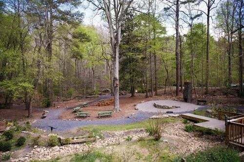
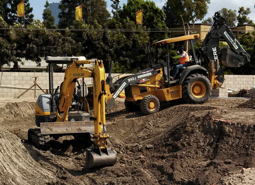

1795
清朝時期 西元1696年 - 西元1698年 清朝閔知府幕濱郁永河出差至台灣採硫磺，撰寫《裨海紀遊》，書中曾紀錄當時大肚山是一片蓊鬱綠樹林，其意旨「茂密的叢林」。
1896
日治時期 西元1895年 - 西元1945年 日本政府曾要求農民將此地改為蔗田，大量砍伐相思樹以種植甘蔗，以供經濟所需，漸漸形成一望無際的蔗田景觀。
1984

1992年依內政部營建署《臺灣地區都會區域休閒設施發展方案》規劃建置公園，採大型開放空間結合廣大綠地營造綠地美化的視覺景觀。
1992

1994年動工至2000年10月28日正式開園使用，成為全台第二座大型都市森林公園。
2000
2000年，正式開園使用，成為全台第二座大型都市森林公園。